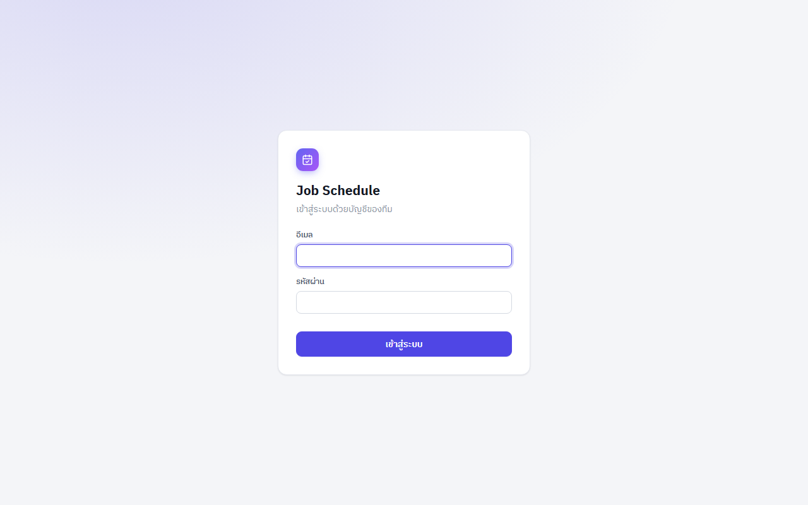
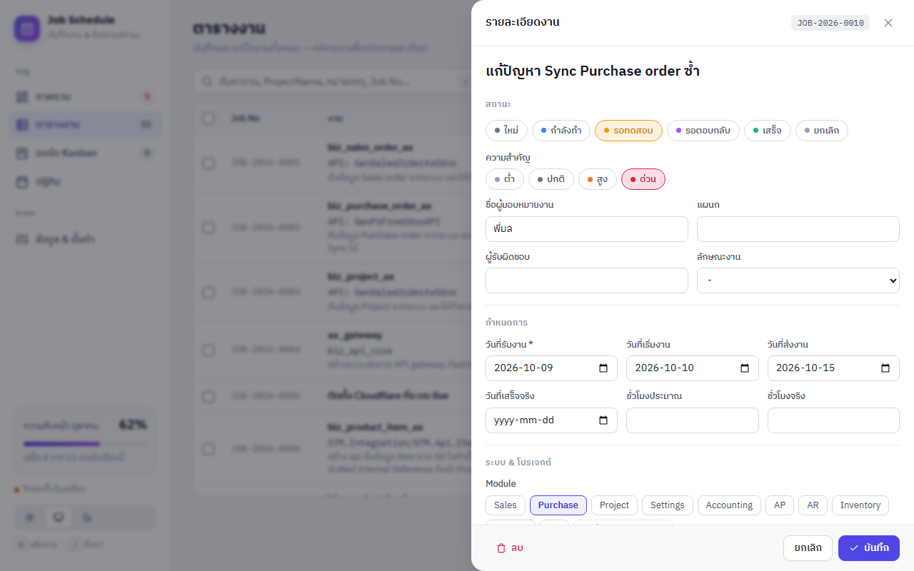
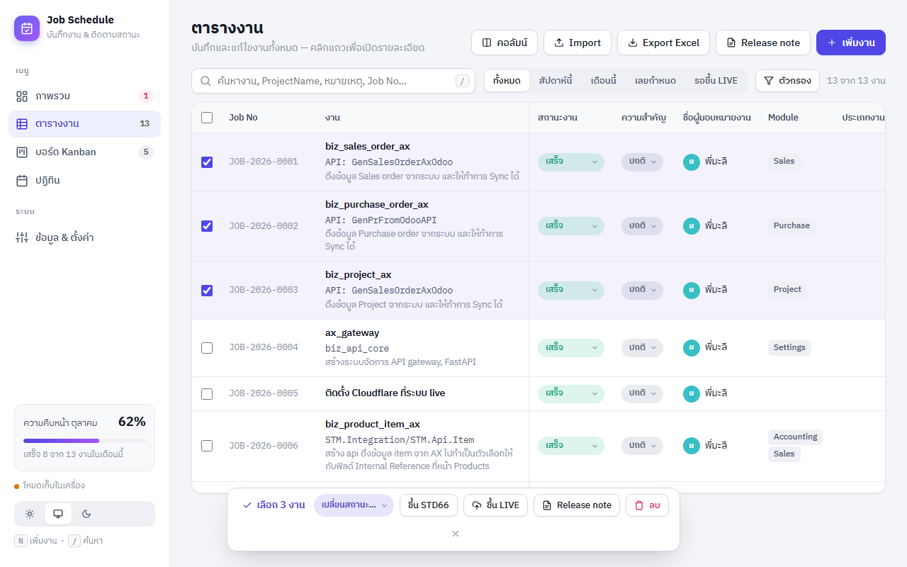
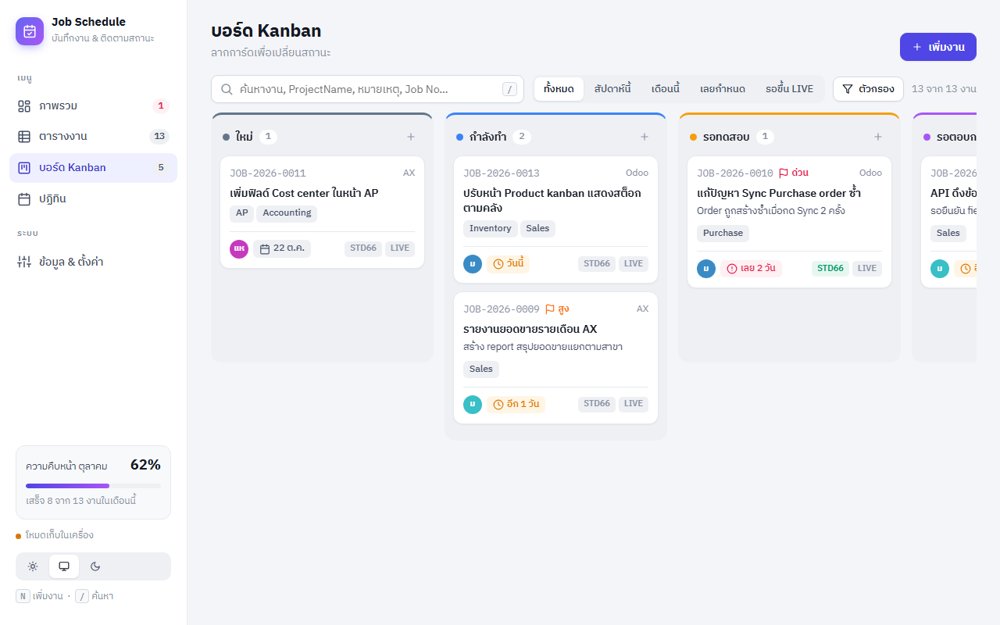
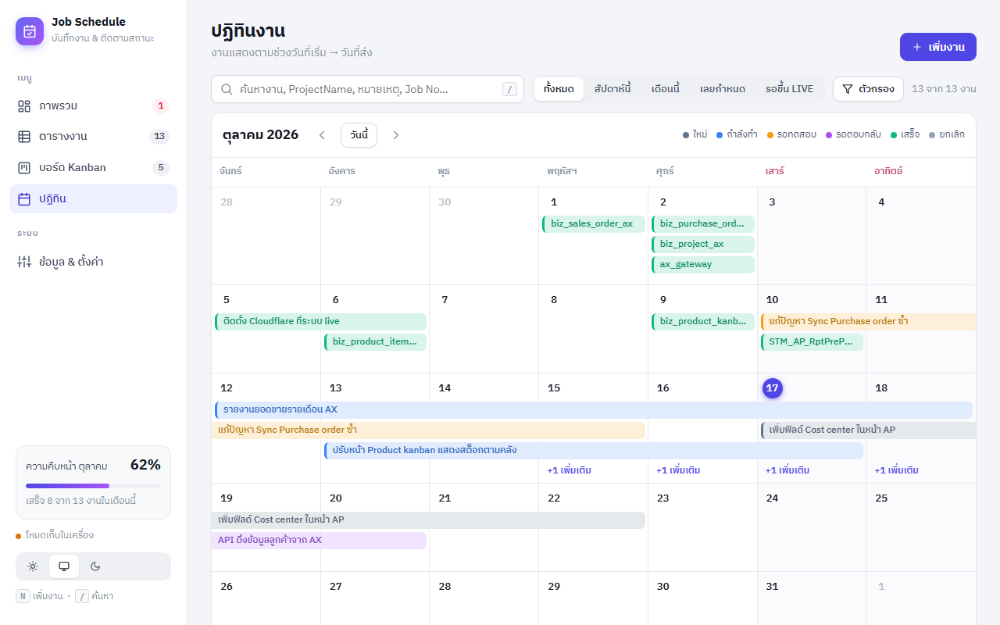
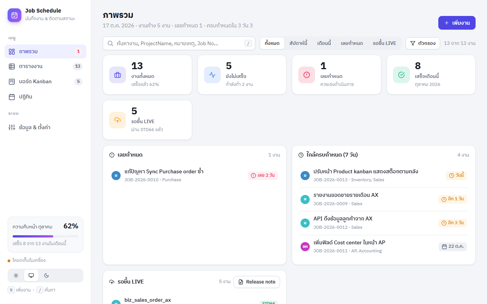
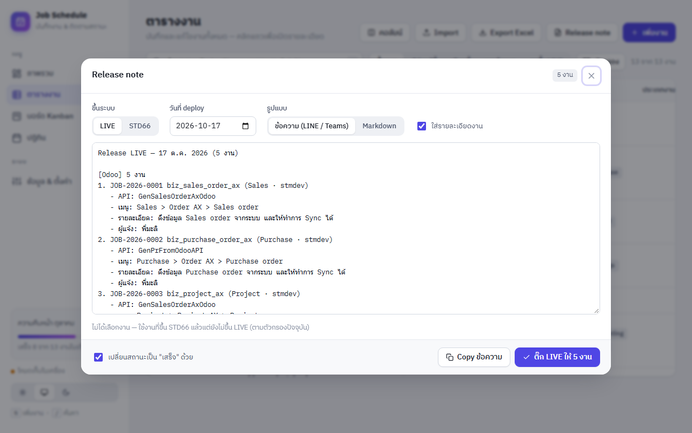
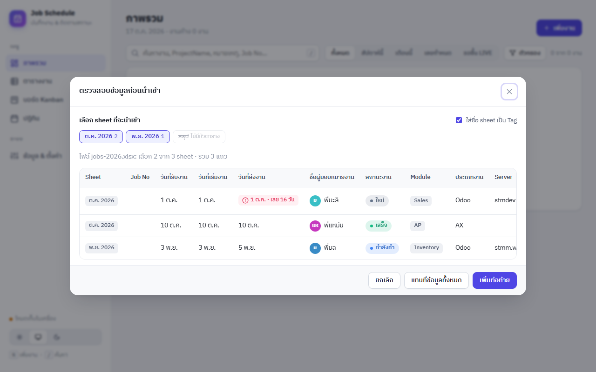
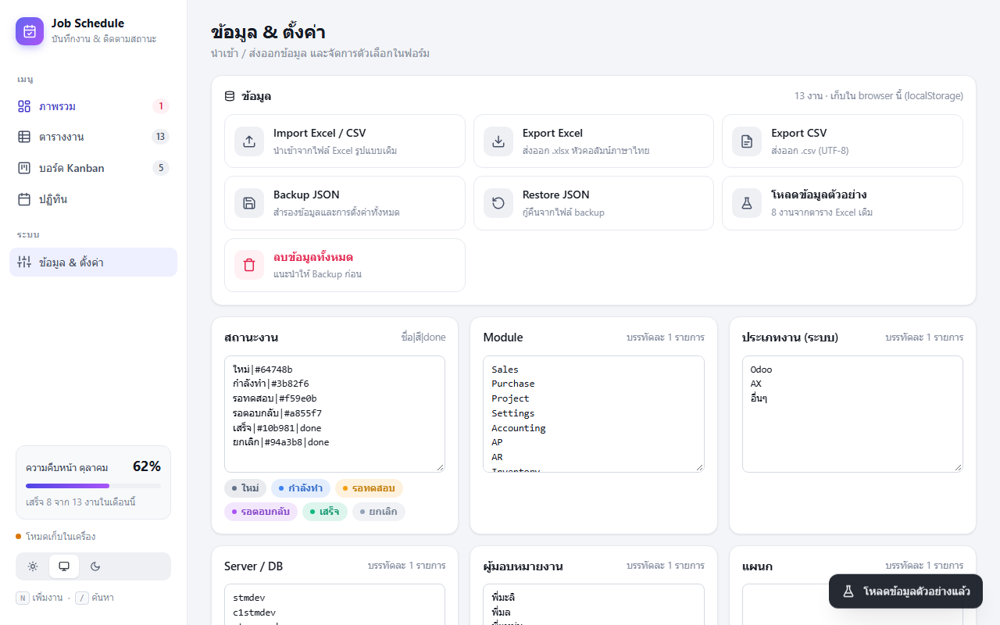

Job Schedule — คู่มือการใช้งาน
ระบบบันทึกงานและติดตามสถานะงานพัฒนา Odoo / AX แทนตาราง Excel เดิม ทั้งทีมเห็นข้อมูลชุดเดียวกันแบบ realtime ตั้งแต่รับงาน → พัฒนา → ขึ้น STD66 → ขึ้น LIVE
1เข้าสู่ระบบ & หน้าจอหลัก
เว็บ: job-schedule-cyan.vercel.app — ใช้ได้ทั้งคอมพิวเตอร์และมือถือ
- เปิดเว็บ แล้วกรอก อีเมล และ รหัสผ่าน ที่ผู้ดูแลระบบสร้างให้ → กด เข้าสู่ระบบ
- ระบบจำการ login ไว้ ครั้งต่อไปเปิดเว็บก็เข้าได้เลย — ออกจากระบบได้ที่ไอคอนท้ายอีเมลมุมซ้ายล่าง
ระบบไม่เปิดให้สมัครเอง — ถ้ายังไม่มีบัญชีหรือลืมรหัสผ่าน ติดต่อผู้ดูแลระบบ (ดูหัวข้อ 17)

ส่วนประกอบของหน้าจอ
| ส่วน | ใช้ทำอะไร |
|---|---|
| เมนูด้านซ้าย | ภาพรวม · ตารางงาน · บอร์ด Kanban · ปฏิทิน · ข้อมูล & ตั้งค่า — ตัวเลขข้างเมนูคือจำนวนงาน (สีแดงที่ "ภาพรวม" = งานเลยกำหนด) |
| การ์ดความคืบหน้า | % งานที่เสร็จของเดือนนี้ (มุมซ้ายล่าง) |
| ปุ่มธีม | สว่าง / ตามระบบ / มืด |
| แถบค้นหา & ตัวกรอง | ใช้ร่วมกันทุกหน้า — กรองแล้วทั้งตาราง Kanban ปฏิทิน และกราฟเปลี่ยนตาม |
2บันทึกงานใหม่
ฟอร์มจะเลื่อนออกมาจากด้านขวา — กรอกเท่าที่รู้ก่อน แล้วค่อยเติมทีหลังได้
- กดปุ่ม + เพิ่มงาน มุมขวาบน หรือกดคีย์ N
- พิมพ์ ชื่องาน สั้น ๆ ในช่องบนสุด (เช่น "Sync Sales order จาก AX")
- เลือก สถานะ และ ความสำคัญ โดยคลิกปุ่มสี
- กรอก ผู้มอบหมายงาน — ระบบจะแนะนำชื่อที่เคยกรอก
- กรอก วันที่รับงาน (บังคับ) วันที่เริ่ม และวันที่ส่ง
- เลือก Module (เลือกได้หลายตัว / พิมพ์ชื่อใหม่แล้วกด Enter), ประเภทงาน Odoo/AX, Server, ProjectName, Form/Report
- เขียนรายละเอียดงานใน หมายเหตุ → กด บันทึก

งานคล้ายงานเดิม? ในตารางเอาเมาส์ชี้แถว → กดไอคอน Duplicate (⧉) จะได้ฟอร์มที่ copy ข้อมูลมาให้ (สถานะ วันที่ และ deploy ถูกล้างให้ใหม่)
กฎการตรวจสอบตอนบันทึก
- ต้องมีวันที่รับงาน และต้องมี ชื่องาน หรือ ProjectName หรือ หมายเหตุ อย่างน้อย 1 ช่อง
- วันที่เริ่ม ≥ วันที่รับ · วันที่ส่ง ≥ วันที่เริ่ม · วันที่เสร็จจริง ≥ วันที่รับ
- เปลี่ยนสถานะเป็น เสร็จ แล้วระบบเติม "วันที่เสร็จจริง" เป็นวันนี้ให้ (แก้ได้)
- เปิดสวิตช์ STD66 / LIVE แล้วระบบเติมวันที่ขึ้นระบบเป็นวันนี้ให้
- Job No (เช่น
JOB-2026-0145) ระบบออกให้อัตโนมัติ ไม่ซ้ำกัน
3ความหมายของแต่ละช่อง
เทียบกับคอลัมน์ในตาราง Excel เดิม
| ช่อง | ความหมาย / ค่าที่ใช้ | Excel เดิม |
|---|---|---|
| ชื่องาน | หัวข้อสั้น ๆ ใช้แสดงใน Kanban / ปฏิทิน (ถ้าว่าง ใช้บรรทัดแรกของ ProjectName) | ใหม่ |
| สถานะงาน |
ใหม่ กำลังทำ รอทดสอบ รอตอบกลับ เสร็จ ยกเลิก "เสร็จ" และ "ยกเลิก" นับเป็นงานที่ปิดแล้ว (ไม่ขึ้นเลยกำหนด) | สีช่อง |
| ความสำคัญ | ต่ำ · ปกติ · สูง · ด่วน | ใหม่ |
| ชื่อผู้มอบหมายงาน | คนที่สั่ง/แจ้งงาน เช่น พี่มะลิ | ✓ |
| แผนก | แผนกของผู้มอบหมาย | ✓ |
| ผู้รับผิดชอบ | คนในทีมที่ทำงานนี้ | ใหม่ |
| ลักษณะงาน | New feature · Bug fix · Change request · Report · Support | ใหม่ |
| วันที่รับ / เริ่ม / ส่งงาน | วันที่ส่งงาน = กำหนดส่ง ใช้คำนวณ "เลยกำหนด" | ✓ |
| วันที่เสร็จจริง | วันที่ปิดงานจริง (เติมเองเมื่อเปลี่ยนเป็นเสร็จ) | ใหม่ |
| ชั่วโมงประมาณ / จริง | ใช้ประเมินงานครั้งต่อไป | ใหม่ |
| Module | Sales, Purchase, Project, AP … เลือกได้หลายตัว | ✓ |
| ประเภทงาน (ระบบ) | Odoo · AX · อื่นๆ | ✓ |
| Server / DB | stmdev · c1stmdev · stmm.work … | คอลัมน์ไม่มีหัว |
| ProjectName | ชื่อ module / API — หลายบรรทัดได้ เช่น biz_sales_order_ax + API: GenSalesOrderAxOdoo | ✓ |
| Form / Report / Job / Other | เมนูหรือหน้าจอที่เกี่ยวข้อง เช่น Sales > Order AX > Sales order | ✓ |
| Button Work | ปุ่มที่เกี่ยวข้อง | ✓ |
| Tags · ลิงก์อ้างอิง | คำค้นเพิ่มเติม · ลิงก์ ticket / เอกสาร / Git | ใหม่ |
| STD66 / LIVE | ขึ้นระบบทดสอบ / ระบบจริงแล้วหรือยัง + วันที่ขึ้น | ✓ (+วันที่) |
| หมายเหตุ | รายละเอียดงาน ปัญหา เงื่อนไขที่ผู้ใช้แจ้ง | ✓ |
4ตารางงาน
หน้าหลักสำหรับดูและแก้งานทั้งหมด หน้าตาคล้าย Excel เดิม

| ต้องการ | ทำอย่างไร |
|---|---|
| ดู/แก้รายละเอียด | คลิกที่แถว |
| เปลี่ยนสถานะ / ความสำคัญ | คลิกป้ายสีในแถว → เลือกค่าใหม่ — บันทึกทันที |
| ติ๊กขึ้น STD66 / LIVE | คลิกวงกลมในคอลัมน์ STD66 / LIVE (คลิกซ้ำ = ยกเลิก) |
| เรียงลำดับ | คลิกหัวคอลัมน์ (คลิกซ้ำ = กลับลำดับ) |
| ซ่อน/แสดงคอลัมน์ | ปุ่ม คอลัมน์ — ตั้งแยกได้แต่ละคน |
| Duplicate / ลบ | เอาเมาส์ชี้แถว → ไอคอนด้านขวาสุด |
| เลื่อนดูคอลัมน์ขวา | เลื่อนแนวนอน — Job No และ "งาน" จะค้างอยู่ด้านซ้าย |
สัญลักษณ์กำหนดส่ง
● เลย 2 วัน เลยกำหนดแล้ว (แถวมีแถบแดงด้านซ้าย) ● วันนี้ / อีก 3 วัน ใกล้ครบกำหนด ✓ 9 ต.ค. เสร็จแล้ว
5เลือกหลายงานพร้อมกัน
ใช้เมื่อต้องเปลี่ยนสถานะหรือขึ้นระบบทีละหลายงาน
- ติ๊ก ☐ หน้าแถวที่ต้องการ (ช่องบนหัวตาราง = เลือกทุกงานที่แสดงอยู่ตามตัวกรอง)
- แถบเครื่องมือจะลอยขึ้นด้านล่าง: เปลี่ยนสถานะ… ขึ้น STD66 ขึ้น LIVE Release note ลบ
- เลือกคำสั่ง — ระบบบันทึกทีละงานแล้วแจ้งจำนวนที่สำเร็จ
- กด ✕ บนแถบเพื่อยกเลิกการเลือก
ใช้คู่กับตัวกรอง เช่น กรอง "รอขึ้น LIVE" → ติ๊กหัวตาราง → ขึ้น LIVE = ปิดงานรอบ deploy ได้ในคลิกเดียว
6ค้นหา & ตัวกรอง
- ช่องค้นหา (/) — ค้นจาก Job No, ชื่องาน, ProjectName, Form, หมายเหตุ, ผู้มอบหมาย, Server, Module, Tags
- ปุ่มลัด: ทั้งหมด · สัปดาห์นี้ · เดือนนี้ · เลยกำหนด · รอขึ้น LIVE
- ตัวกรองเพิ่มเติม (ปุ่ม ตัวกรอง): ช่วงวันที่ (เลือกได้ว่ากรองตามวันรับ/เริ่ม/ส่ง/เสร็จ), ผู้มอบหมาย, Module, ประเภทงาน, Server, สถานะ, ความสำคัญ, STD66, LIVE
- ตัวกรองที่ใช้อยู่แสดงเป็นป้ายใต้แถบ — กด ✕ เพื่อเอาออกทีละตัว หรือ "ล้างตัวกรองทั้งหมด"
"สัปดาห์นี้ / เดือนนี้" หมายถึงงานที่ ช่วงวันที่เริ่ม → วันที่ส่ง คาบเกี่ยวกับสัปดาห์/เดือนปัจจุบัน · Export Excel จะส่งออกเฉพาะงานตามตัวกรองที่ใช้อยู่
7บอร์ด Kanban

- ลากการ์ด ไปวางอีกคอลัมน์ = เปลี่ยนสถานะ (ลากไป "เสร็จ" จะเติมวันที่เสร็จจริงให้)
- คลิกการ์ด = เปิดรายละเอียด · ปุ่ม + ที่หัวคอลัมน์ = เพิ่มงานในสถานะนั้น
- การ์ดเรียงตามวันที่ส่ง — แสดง Job No, ความสำคัญ (ถ้าไม่ใช่ปกติ), Module, ผู้มอบหมาย, กำหนดส่ง, ป้าย STD66/LIVE
8ปฏิทิน

- แถบที่ขอบตัดตรง = งานต่อเนื่องจาก/ไปสัปดาห์อื่น
- วันที่มีงานเกิน 3 แถว จะมี +n เพิ่มเติม → กดเพื่อขยายทั้งสัปดาห์
- คลิกแถบ = เปิดงาน · คลิกช่องว่างในวัน = เพิ่มงานใหม่ของวันนั้น · ปุ่ม ◀ วันนี้ ▶ เปลี่ยนเดือน
9ภาพรวม (Dashboard)

| การ์ด | นับอะไร |
|---|---|
| งานทั้งหมด | ทุกงานตามตัวกรอง + % ที่เสร็จแล้ว |
| ยังไม่เสร็จ | สถานะที่ไม่ใช่ เสร็จ / ยกเลิก (คลิกเพื่อไป Kanban) |
| เลยกำหนด | ยังไม่เสร็จ และวันที่ส่ง < วันนี้ |
| เสร็จเดือนนี้ | งานที่วันที่เสร็จจริง (หรือวันที่ส่ง) อยู่ในเดือนนี้ |
| รอขึ้น LIVE | STD66 ✓ แต่ LIVE ยังไม่ขึ้น |
ใต้การ์ดมีรายการ เลยกำหนด · ใกล้ครบกำหนด (7 วัน) · รอขึ้น LIVE (คลิกเพื่อเปิดงาน) และกราฟตามสถานะ, รับเข้า/เสร็จรายสัปดาห์, ตาม Module, ตามผู้มอบหมาย — คลิกการ์ดตัวเลขเพื่อไปดูรายการในตาราง
10ขึ้น STD66 / LIVE & Release note
ขั้นตอนประจำรอบ deploy — สร้างข้อความแจ้งทีม แล้วติ๊ก LIVE ให้ทุกงานในคลิกเดียว
- ระหว่างพัฒนา: เมื่องานขึ้นระบบทดสอบ ติ๊ก STD66 (ในตาราง ฟอร์ม หรือแถบเลือกหลายงาน) และเปลี่ยนสถานะเป็น รอทดสอบ
- วัน deploy: กด Release note (หัวตาราง / การ์ด "รอขึ้น LIVE" ในภาพรวม / แถบเลือกหลายงาน)
- ถ้าไม่ได้เลือกงาน ระบบใช้งานที่ STD66 ✓ แต่ยังไม่ขึ้น LIVE ให้อัตโนมัติ · ถ้าเลือกงานไว้ ใช้เฉพาะที่เลือก
- เลือก LIVE / STD66, วันที่ deploy, รูปแบบ ข้อความ (LINE/Teams) หรือ Markdown และจะใส่รายละเอียดหรือไม่ — แก้ข้อความในกล่องได้
- กด Copy ข้อความ → วางในกลุ่มแชท / อีเมล
- หลัง deploy สำเร็จ กด ติ๊ก LIVE ให้ N งาน — ใส่วันที่ LIVE และ (ถ้าเลือกไว้) เปลี่ยนสถานะเป็น "เสร็จ" ให้ทุกงาน

11คลังความรู้
เก็บเทคนิค โค้ด และวิธีแก้ปัญหาจากงานที่ผ่านมาไว้ในที่เดียว (แทนสมุด OneNote) ทั้งทีมเห็นและค้นหาได้
- เพิ่ม: เมนู คลังความรู้ → ปุ่ม + เพิ่มความรู้ (หรือกด N ในหน้านี้) → ใส่หัวข้อ หมวด Tags แล้วเขียนเนื้อหา
- โค้ด: วางระหว่าง
```x++กับ```(รองรับ x++, sql, bash, js, python) จะมีสีและปุ่ม คัดลอก · หัวข้อย่อยขึ้นต้นด้วย###· bullet ขึ้นต้นด้วย- - รูปหน้าจอ: กด Win+Shift+S แคปหน้าจอ แล้วคลิกในช่องเนื้อหา กด Ctrl+V · ลากไฟล์มาวาง หรือกด แนบรูป ก็ได้ — ระบบย่อรูปให้เอง (ราว 100 KB ต่อรูป) แล้วใส่บรรทัด
ในเนื้อหา แก้คำบรรยายหรือย้ายบรรทัดนี้ได้ · ลบบรรทัดนี้ = ลบรูป - ปุ่ม ดูตัวอย่าง ในฟอร์ม = ดูหน้าตาก่อนบันทึก · คลิกรูปเพื่อดูภาพใหญ่
- ค้นหา: พิมพ์ได้หลายคำ (ต้องเจอทุกคำ) ค้นทั้งหัวข้อ เนื้อหา โค้ด Tags และ Job No · กดหมวดด้านบนเพื่อกรอง · ปุ่มรูปหมุดในหน้าอ่าน = ปักหมุดไว้บนสุด
- ผูกกับงาน: ใส่ Job No ในช่อง "ใช้ในงาน" — เปิดงานนั้นจะเห็นหัวข้อ คลังความรู้ของงานนี้ · ในหน้ารายละเอียดงานกด บันทึกเป็นความรู้ เพื่อสร้างเรื่องใหม่โดยดึงชื่องาน หมายเหตุ และ ProjectName มาให้
- หมวดในรายการเลือกแก้ได้ที่ ข้อมูล & ตั้งค่า → หมวดคลังความรู้
- ย้ายจาก OneNote: ใน OneNote เปิด section ที่ต้องการ → File → Export → Section → Single File Web Page (*.mht) → ในแอปกด Import OneNote เลือกไฟล์ .mht → ตรวจรายการหน้า (หัวข้อ วันที่ จำนวนรูป) → ตั้งชื่อหมวด → นำเข้า · ทำทีละ section · 1 หน้าใน OneNote = 1 เรื่อง วันที่ในคลังความรู้ใช้วันที่สร้างหน้าใน OneNote · ข้อความฟอนต์ Consolas จะกลายเป็นกล่องโค้ด · รูปถูกย่อแล้วอัปโหลดให้
- หน้าที่มีคำว่า password / รหัสผ่าน / token จะไม่ถูกเลือกไว้ เพราะทุกคนในทีมเห็นคลังความรู้ — ลบรหัสผ่านใน OneNote ก่อน export หรือติ๊กเองถ้าแน่ใจ (รูปหน้าจอที่มีรหัสผ่านตรวจอัตโนมัติไม่ได้) · หน้าที่หัวข้อซ้ำกับที่มีอยู่แล้วในหมวดเดียวกันก็ไม่ถูกเลือก จึง import ไฟล์เดิมซ้ำได้โดยไม่เกิดเรื่องซ้ำ
รูปเก็บใน Supabase Storage แผน Free (1 GB ≈ 7,000–10,000 รูป) ดูพื้นที่ที่ใช้ได้ที่ ข้อมูล & ตั้งค่า → สถานะระบบ · ลบเรื่อง = ลบรูปในเรื่องนั้นด้วย
12Import จาก Excel
เมนู ข้อมูล & ตั้งค่า → Import Excel / CSV หรือปุ่ม Import ในหน้าตาราง
- เลือกไฟล์
.xlsx/.xls/.csv - ระบบอ่านทุก sheet และหาแถวหัวตารางเองใน 15 แถวแรก — sheet ที่ไม่มีหัวตาราง (เช่น หน้าสรุป) จะเป็นสีจาง เลือกไม่ได้
- เลือก/ไม่เลือก sheet · ติ๊ก ใส่ชื่อ sheet เป็น Tag ถ้าต้องการรู้ว่างานมาจาก sheet ไหน
- ตรวจตัวอย่าง 30 แถวแรก → กด เพิ่มต่อท้าย หรือ แทนที่ข้อมูลทั้งหมด

หัวคอลัมน์ที่ระบบรู้จัก
วันที่รับงาน · วันที่เริ่มงาน · วันที่ส่งงาน · ชื่อผู้มอบหมายงาน · แผนก · สถานะงาน · Module · ประเภทงาน · (คอลัมน์ไม่มีหัวถัดจากประเภทงาน = Server) · ProjectName · Form / Report / Job / Other · Button Work · หมายเหตุ · STD66 · LIVE · และคอลัมน์ที่ Export ออกจากระบบนี้ทั้งหมด
กติกาการแปลงข้อมูล
- STD66 / LIVE: ✓ ✔ ☑ x yes y 1 true = ติ๊ก
- วันที่: อ่านได้ทั้งช่องวันที่ของ Excel,
2026-10-01,01/10/2026— ปี พ.ศ. (เกิน 2400) แปลงเป็น ค.ศ. อัตโนมัติ - สถานะว่าง: ถ้า STD66 หรือ LIVE ติ๊กแล้ว → "เสร็จ" · ไม่ติ๊ก → "ใหม่" (ระบบอ่านสีช่องใน Excel ไม่ได้)
- Job No: ใช้ของเดิมถ้าไม่ซ้ำ · ซ้ำหรือว่าง → ออกเลขใหม่
"แทนที่ข้อมูลทั้งหมด" จะลบงานทุกงานของทั้งทีม ก่อนนำเข้า — Backup ก่อนทุกครั้ง และระวัง sheet สรุปที่ copy งานซ้ำจาก sheet อื่น (เอาออกก่อนนำเข้า)
13Export & Backup

| คำสั่ง | ได้อะไร |
|---|---|
| Export Excel | ไฟล์ .xlsx หัวคอลัมน์ภาษาไทยแบบเดิม — เฉพาะงานตามตัวกรอง (Import กลับได้) |
| Export CSV | ไฟล์ .csv UTF-8 เปิดใน Excel ภาษาไทยไม่เพี้ยน |
| Backup JSON | สำรองงานทั้งหมด + การตั้งค่า |
| Restore JSON | กู้คืนจากไฟล์ Backup — แทนที่ข้อมูลทั้งหมดของทั้งทีม (ควรให้ผู้ดูแลระบบทำ) |
นอกจากนี้ระบบ backup อัตโนมัติทุกวัน 01:00 น. เก็บย้อนหลัง 90 วัน (ไฟล์เข้ารหัส — ผู้ดูแลระบบเป็นคนกู้คืน)
14ทำงานพร้อมกันหลายคน
- Realtime — เมื่อเพื่อนร่วมทีมเพิ่ม แก้ หรือลากการ์ด หน้าจอของคุณอัปเดตเองภายในไม่กี่วินาที ไม่ต้อง refresh
- กันบันทึกทับกัน — ถ้าคุณเปิดงานค้างไว้ แล้วมีคนอื่นบันทึกงานเดียวกันก่อน ตอนกดบันทึกจะขึ้นเตือน
"JOB-xxxx ถูกแก้ไขโดย ชื่อ@อีเมล เมื่อ …"- OK = บันทึกทับด้วยข้อมูลของคุณ
- Cancel = ไม่บันทึก แล้วเปิดข้อมูลล่าสุดของเพื่อนให้ดู (แก้ต่อได้)
- ประวัติสถานะ — ทุกการเปลี่ยนสถานะบันทึกเวลาและอีเมลคนเปลี่ยน ดูได้ท้ายฟอร์ม
15ตั้งค่าตัวเลือก
เมนู ข้อมูล & ตั้งค่า → Master list — แก้ตัวเลือกที่ใช้ในฟอร์มและตัวกรอง (บรรทัดละ 1 รายการ) แล้วกด บันทึกการตั้งค่า · มีผลกับทุกคนในทีม
- สถานะงาน ใช้รูปแบบ
ชื่อ|สี|doneเช่นรอ UAT|#0ea5e9หรือปิดงาน|#10b981|done— ใส่doneเมื่อสถานะนั้นนับว่างานปิดแล้ว - Module · ประเภทงาน · Server · ผู้มอบหมาย · แผนก · ความสำคัญ · ลักษณะงาน
- ค่าที่เคยกรอกในงานจะถูกแนะนำอัตโนมัติด้วย แม้ไม่ได้อยู่ใน master list
เปลี่ยนชื่อสถานะ งานเดิมที่ใช้ชื่อเก่าจะไม่เปลี่ยนตาม (ยังแสดงเป็นคอลัมน์แยกใน Kanban) — ใช้การเลือกหลายงานเปลี่ยนสถานะให้งานเหล่านั้น
16คีย์ลัด
| คีย์ | ทำอะไร |
|---|---|
| N | เพิ่มงานใหม่ (ใช้ได้แม้แป้นพิมพ์เป็นภาษาไทย) · ในหน้าคลังความรู้ = เพิ่มความรู้ |
| / | ไปที่ช่องค้นหา |
| Esc | ปิดฟอร์ม / หน้าต่าง |
| Enter | ในช่อง "+ เพิ่ม Module" = เพิ่ม Module ใหม่ |
17สำหรับผู้ดูแลระบบ
รายละเอียดเชิงเทคนิคทั้งหมดอยู่ใน SETUP.md
| งาน | ทำที่ |
|---|---|
| เพิ่มผู้ใช้ | Supabase → Authentication → Users → Add user → Create new user → ติ๊ก Auto Confirm User |
| รีเซ็ตรหัสผ่าน / ลบผู้ใช้ | Supabase → Authentication → Users → เมนู ⋯ ของผู้ใช้ |
| แก้หน้าเว็บ | แก้โค้ด → push ขึ้น GitHub branch main → Vercel deploy เอง (~1 นาที) |
| แก้โครงสร้างตาราง | แก้ supabase/schema.sql → รันใน SQL Editor (รันซ้ำได้) |
| ดู backup อัตโนมัติ | GitHub → Actions → Daily Supabase backup → Artifacts (ข้อมูล .json.gpg + รูปคลังความรู้ images.tar.gpg) |
| รูปในคลังความรู้ | Supabase → Storage → bucket knowledge (private) · เตือนเมื่อใช้เกิน 80% ของ 1 GB (GitHub Issue ป้าย storage-alert) |
| แจ้งเตือนระบบ | workflow รายวันเปิด GitHub Issue (ส่งอีเมลถึงเจ้าของ repo) เมื่อฐานข้อมูลใช้เกิน 80% ของ 500 MB หรือ backup ล้มเหลว — ปิด issue เองเมื่อกลับมาปกติ · ในแอปดูได้ที่ ข้อมูล & ตั้งค่า → สถานะระบบ |
| กู้คืนจาก backup อัตโนมัติ | ดาวน์โหลด artifact → แตก zip → Git Bash: gpg -d ไฟล์.json.gpg > backup.json → ในแอป Restore JSON |
ห้ามใส่ service_role key หรือ passphrase ของ backup ในไฟล์ใด ๆ ของ repo (repo เป็น public) · Supabase แผน Free จะ pause ถ้าไม่มีการใช้งาน 7 วัน (backup รายวันช่วยกันไว้)
18คำถามที่พบบ่อย
เข้าสู่ระบบไม่ได้ — "อีเมลหรือรหัสผ่านไม่ถูกต้อง"
ไม่เห็นปุ่ม / ฟีเจอร์ใหม่ที่คู่มือพูดถึง
เปิดเว็บแล้วขึ้น "โหลดข้อมูลไม่สำเร็จ"
มีแถบสีแดง/ส้มขึ้นด้านบนของหน้าจอ
- ฐานข้อมูลใกล้เต็ม — ใช้เกิน 80% ของ 500 MB (สีแดงเมื่อเกิน 90%) ถ้าเต็มจะบันทึกงานใหม่ไม่ได้
- Backup ล้มเหลว / ไม่มี backup มาหลายวัน — ระบบสำรองข้อมูลรายวันมีปัญหา
- เชื่อมต่อฐานข้อมูลไม่ได้ — ฐานข้อมูลอาจถูก pause
เพื่อนแก้งานแล้ว แต่หน้าจอฉันไม่เปลี่ยน
Import แล้วขึ้น "ไม่พบแถวหัวตาราง"
Import แล้วสถานะเป็น "ใหม่" เกือบทั้งหมด
วันที่หรือ Job No เป็นปี พ.ศ. (เช่น 2567)
supabase/fix-buddhist-years.sql ครั้งเดียว · import ใหม่หลังจากนั้นแปลงให้อัตโนมัติคลังความรู้ขึ้น "ยังเปิดคลังความรู้บน Supabase ไม่ได้"
supabase/schema.sql (v4) — รันใน SQL Editor ครั้งเดียว แล้ว refresh หน้าเว็บวางรูปแล้วขึ้น "อัปโหลดรูปไม่สำเร็จ"
ลบงานผิด กู้คืนได้ไหม?
19ประวัติการปรับปรุง
| วันที่ | รายการ |
|---|---|
| 20 ต.ค. 2026 | เพิ่ม คลังความรู้ + Import จาก OneNote (.mht): เก็บเทคนิค/โค้ด (มีสีและปุ่มคัดลอก) · วางรูปหน้าจอด้วย Ctrl+V (ย่อรูปอัตโนมัติ) · ผูกกับ Job No · แจ้งเตือนพื้นที่รูป · backup รูปรายวัน · ตารางงานเรียงตาม Tags และวันที่รับงานล่าสุด |
| 18 ต.ค. 2026 | แจ้งเตือนสถานะระบบ: ฐานข้อมูลใกล้เต็ม · backup ล้มเหลว/หยุดรัน · เชื่อมต่อฐานข้อมูลไม่ได้ (ในแอป + GitHub Issue ทางอีเมล) · การ์ด "สถานะระบบ" ในหน้า ข้อมูล & ตั้งค่า |
| 17 ต.ค. 2026 | เปิดใช้งาน: ตาราง / Kanban / ปฏิทิน / ภาพรวม · Import-Export Excel (หลาย sheet) · ฐานข้อมูล Supabase + login + realtime · เลือกหลายงาน · Release note · กันบันทึกทับกัน · backup อัตโนมัติรายวัน · แปลงปี พ.ศ. ตอน Import |
คู่มือฉบับร่าง (prototype) — ภาพประกอบใช้ข้อมูลตัวอย่าง · มีข้อเสนอแนะแจ้งผู้ดูแลระบบได้